Problem: Young adults travel to places often on limited budget. They seek ways to cut the spending on accommodations, saving money to spend on food, sightseeing and such.
However, safe and convenient accommodations, like some Airbnb and hotels, are not affordable, and cheap accommodations, such as CouchSurfing, are not safe. If staying with friends for free, people don’t always have friends in the cities they want to go to.
Target Users: Young adults who travel on limited budget.
So, why young adults? Why not everyone?
Based on my user research (I will talk about research process below), I found that
1) young adults (such as college student or new grads) are normally tight on budget. These people normally either financially depend on their parents or have limited income, so they are in need of saving money when traveling. People who are older in age are more likely to have stable income, so they are not in need of saving money on accommodation by spending the nights on young adults' couch or dorm bed (we made this assumption based on professor's design advice. I did not acquire user research data to support this assumption).
2) Young people don't quite like accommodating strangers in older age (from the initial survey data).
Overview
Our design idea was initially based on my personal experience of travelling to LA and staying with my friends for 2 days. When one of them travelled to Seattle, I was happy to let her stay over at my place in return. What if we take the opportunity to expand this network and let young people travel around the world based on their network of Facebook friends?
The solution to this problem is our design: Hoppr, a mobile app we designed for young people who want to travel but have limited funds.Users login into Hoppr using Facebook, and Hoppr finds user’s friends and the friends of the user’s friends. Users find friend (or friend’s friend) in town, stay with the friend and pay virtual currency: travel coins.
Based on a statistic supplied by Facebook, the median number of friends that a user has on Facebook is 200, so if every of your 200 Facebook friends has 200 friends, that could be as many as 40,000 people and just as many connections.
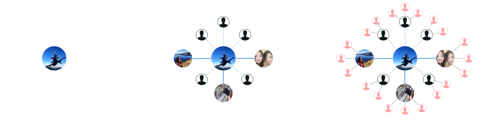 Figure 1, Potential network of Facebook friendsUser Research
Before only conducting interviews like our instructor said to the class, I wanted to make sure that young adults are currently facing this problem (need to save money on accommodation while traveling), and I need to be sure that my design solution is viable. So I decided to send out survey, gathering quantitative data. In this short survey, I mainly focused on testing the existence of my design problem and my design solution.
I created the survey online and sent out on social media. In the end, I received 18 responses from target users. Result is down below.
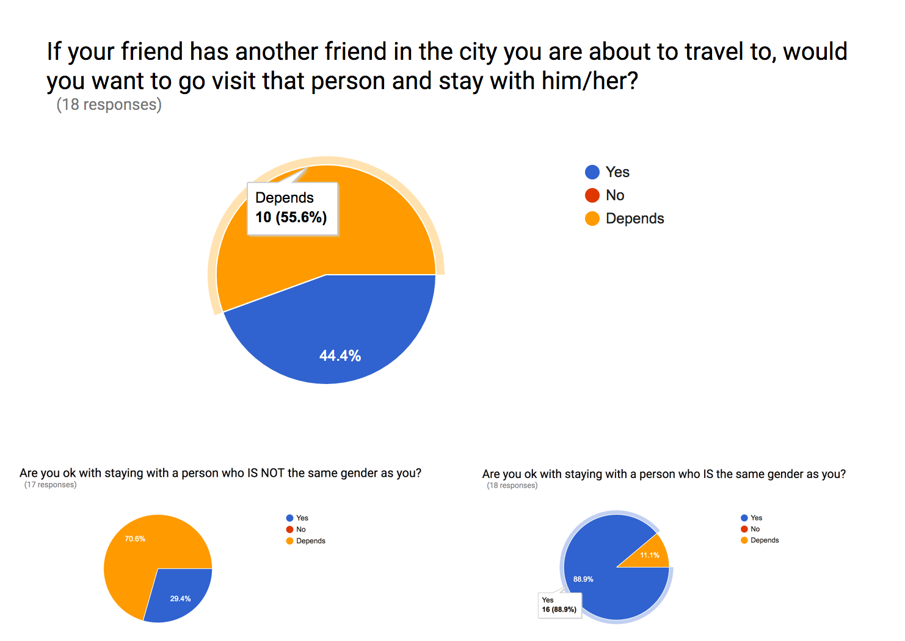 Figure 2, Partial data from the surveyAs we can see, 44.4% of the participants answered yes, and 55.6% answered depends. Fortunately, none of the participants responded “No” to the potential design solution. It means the design solution is considered viable by my target users.
So I followed up to people who answered “depends” and interviewed them for further clarified answer. After interviewing 6 target users, we figured out that users have numerous preferences, such as gender of the host, proximity to public transportation, etc. In the end, we decided to incorporate users' preferences we found during interviews into our filter feature.
Competitive Analysis
Besides survey and interview, me and the team also conducted competitive analysis. We narrowed the competing products down to hotels, Airbnb, hostels and CouchSurfing. I realized that safe and convenient choices, like some Airbnb and hotels are not affordable, and cheap accommodations, such as some hostels and CouchSurfing, are not safe. In other words, providing accommodation that is convenient, affordable and safe is the key to this project.
Personas
After conducting the user research, I analyzed the responses we collected and grouped what the participants had in common, such as pain points and similar preferences, and some of the important differences between the individuals. I used the results of the research and interviewees’ personal experiences to create the personas.
Because all of our elements from the personas came from real experiences, the personas would be able to stand alone. Some of the participants were on scholarship or otherwise low on money to spend, so I gave our persona a goal of finding a place to stay that cost her as little money as possible, and made sure that a desire was to spend as little money as possible. Also, some of our participants emphasized that they were not okay with staying with someone that they don’t know, which is a sentiment that our personas also echo and led to most of our decisions regarding the importance of the mutual Facebook friend. Finally, everyone that we talked to had had experience with Airbnb, hotels, and other services, so we gave them assorted reasons, based off the research, as to why else they may not want to stay with those services.
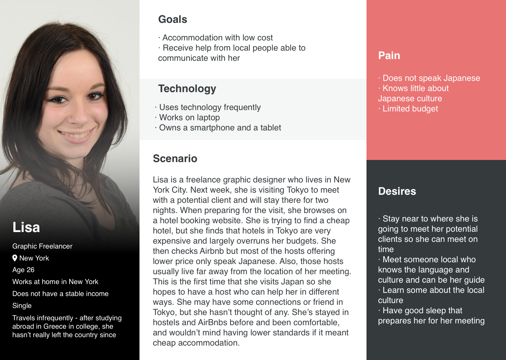 Figure 3, Persona 1 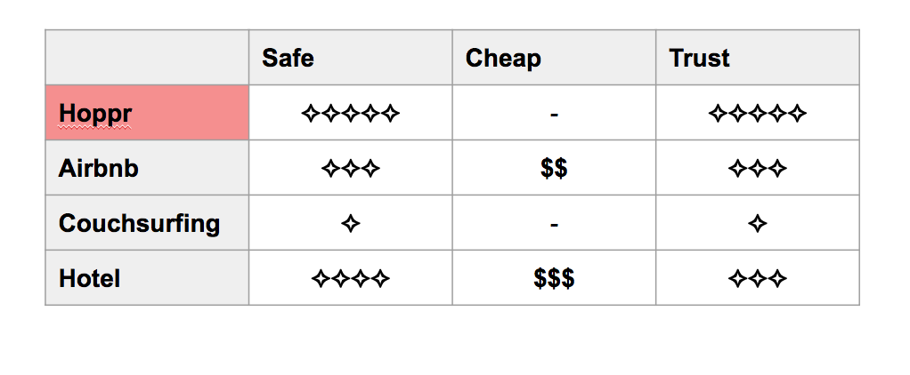 Figure 4, Persona 2I used these personas throughout the process to think about how they might sort our elements based on importance and using that to redesign and iterate the structure the ideas. Especially in the scenarios, the information architecture, and the paper prototypes, these personas were invaluable as they helped us to make sure we thought about our user as we made each step.
Scenarios & Storyboards
The scenarios are a look behind our design; they grow from the personas and the research and influence the rest of the project. I developed scenarios that fit different types of users to help us think more thoroughly about the features we wanted to include.
During the process of developing scenarios, I tried to think from the view of the user. Through their desires, goals and abilities, I formed the key path and defined several of the additional key features because of their expectations either explicitly or implicitly stated in their personas. For example, the research that we did suggested that people often had little money to spend, which was a sentiment we added to the personas, resulting in an expectation of spending little money during the trip. Also, quite reasonably, both personas expected to be safe and to have a respectful host or guest. Stemming from that and our idea to connect our app to Facebook, I also included the expectation that the guest and the host would be able to talk before they meet.
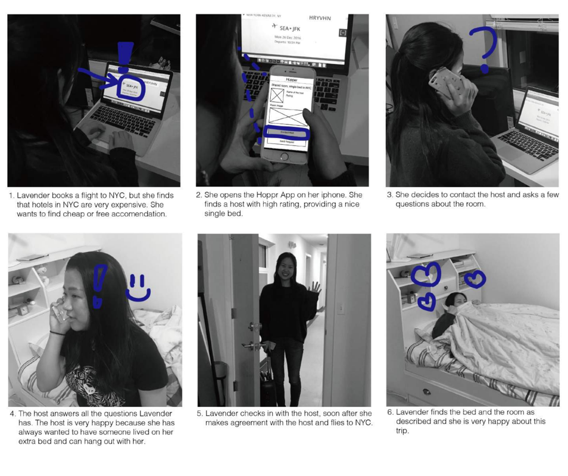 Figure 5, StoryboardAfter we had worked on design sketches as a team, we turned to individual work once again in order to create storyboards for specific tasks and scenarios that we envisioned our users experiencing. Storyboards acted as a creative and convenient way for each of us to communicate how we see users interacting with the Hoppr app, and discuss possible approaches to how we can design the interface to make these scenarios as easy for users as possible.
Our storyboards, though of varying scenarios and approaches, were helpful in our process of visualizing how I predict and want users to experience the Hoppr app. From our storyboards, I was able to move forward in making the sitemap, and further layout how I envision users travelling through the app and being able to intuitively complete tasks.
Sitemap
We built the sitemap from scratch, and we went through several design iterations to finalize it. This sitemap went through several iterations based on multiples rounds of evaluation of paper prototypes, low fidelity prototypes, instructor's comments, and a lot of peer reviews. See below for our final sitemap.
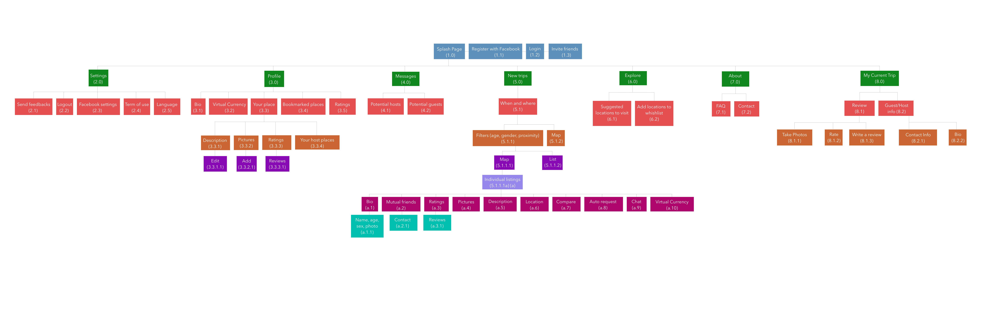 Figure 6, Full sitemapSince the full sitemap is quite large and not so viewable, here down below is the key path of sitemap.
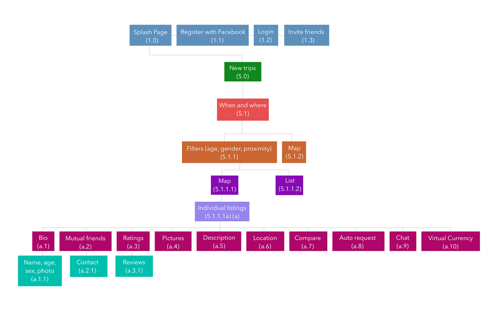 Figure 7, Key path of the sitemapPaper Prototype
After I had collected sufficient data from our user research methods and planned out our information architecture, the next step in our process was to transform that data into visible, tangible screens and results. This began with literally very sketchy ideas about what the UI should look like and how our users would be able to interact with Hoppr. I had to ask ourselves questions such as:
Would a navigational toolbar at the top or the bottom of the app be more helpful to users?
What functions do we want users to be able to interact with on each screen of the app?
Where would it be more intuitive to scroll rather than swipe?
Through iterations of critique and feedback, I eventually was able to refine these sketches into a functioning paper prototype, from which I was able to really see where Hoppr’s strengths and weaknesses lied. Our paper prototype was composed of index cards and smaller pieces of paper to replicate the screens, pop-ups, and buttons that make up the Hoppr UI. After using this physical paper prototype to collect feedback and receive critiques in class, we transferred our prototype to the Prototyping On Paper mobile app. Using POP for our prototype testing not only benefitted our team due to our busy and conflicting schedules, but also allowed our participants to test the app in a more realistic way to how they would actually end up using Hoppr on their phones. One way I defines success for Hoppr, is for our users to consider navigating the app easy and intuitive, and the feedback we received through our usability testing and paper prototyping is extremely valuable towards that goal.
Usability test & Findings
To evaluate the effectiveness of the paper prototype we created, I conducted seven rounds usability testings. I recruited participants who are are also target users (mainly college students, because they meet the requirements, and we can approach them easily).
Participant demographics
There are seven participants for this particular evaluation assignment in our sample group. There were five females and two male. Our participants are college students all with intermediate to advanced technological skills. They are all potential users of this product, primarily valuing affordability while travelling. They have all experienced travelling, some internationally, and some even internationally by themselves. This is particularly helpful, because our participants were more likely to provide insight as to what travellers would be looking for in accommodations.
Method
For this evaluation, one team member instructed the participant with an introductory script. After the participant had been given the introductory script, they would work alone to complete the 3 tasks. While the participant was working to complete the task, the team member took note of any visible difficulties the participant had with the prototype or any comments the participant made regarding the prototype. Once the 3 tasks have been completed, the team member will ask the participant the post-task questionnaire questions. Each team member utilized the paper prototype or the POP version of the paper prototype to execute the tasks, and paper, pens or laptop to take notes.
Findings
Our team analyzed these participants’ problems and worked to ideate some possible design solutions to improve our prototype for the Hoppr app.
Here is the full evaluation report:
Full Evaluation ReportBelow are three main findings that were most common across participants and team member observations.
I. Some functions are missing when users try to adjust their actions.
II. Categorization in context caused confusion.
III. Placement of some elements problematize the Information Architecture.
When transferring what we have on paper prototype to our next step of the projects - annotated wireframe, I mainly focus on solving these existing problems. Also, I received a lot of suggestions for refining the design from the participants. I took all of them into consideration and applied those reasonable ones in our annotated wireframes.
Transition diagram & Annotated wireframe
Before starting working on the annotated wireframes, I analyzed the results collected from the previous usability evaluation of the effectiveness of the paper prototype. I adjusted the the information architecture and the interface based on the findings and some other suggestions from the participants, when creating wireframes based on our paper prototype. The file attached is the wireframe of the full system with annotation on each element. The annotations are to present our design rationales or purpose of the decisions.
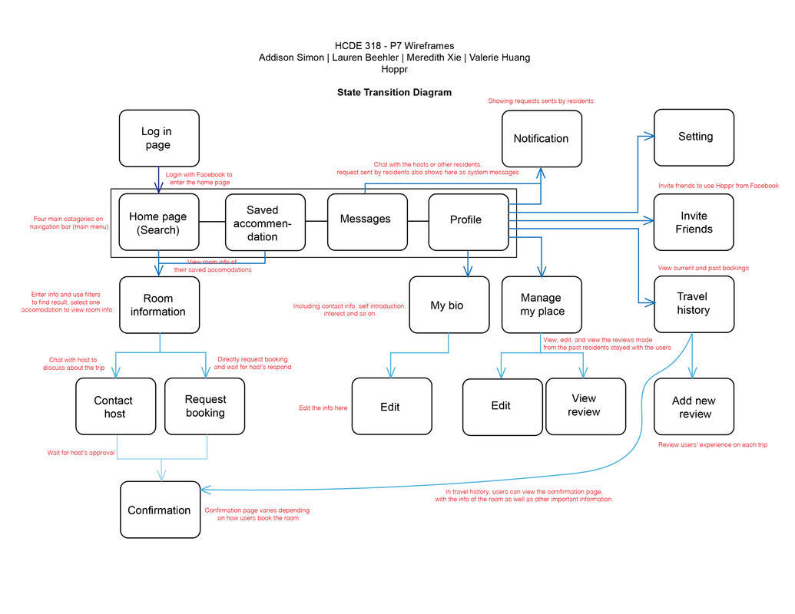 Figure 9, Transition diagram 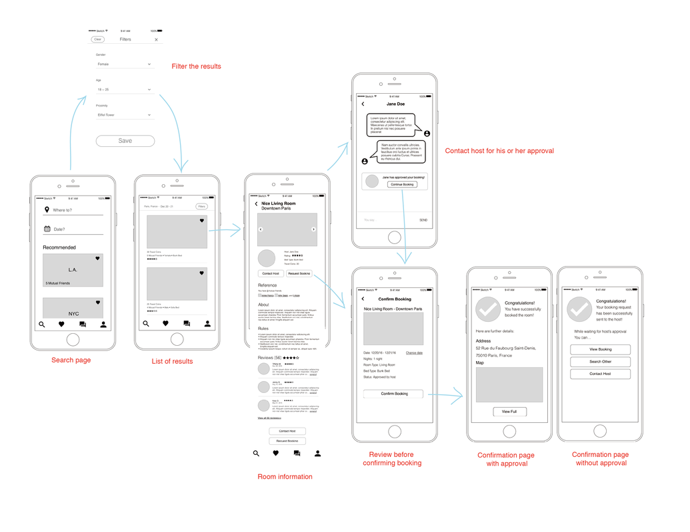 Figure 10, partial interaction flowAfter creating the wireframe of the full system, I used the wireframes to rebuild the information architecture in a form of state transition diagram. This diagram mainly illustrated the key path scenario of the system. The hierarchy was indicated by the depth of the color of arrows. It helped to organize and better demonstrate the structure of the wireframes.
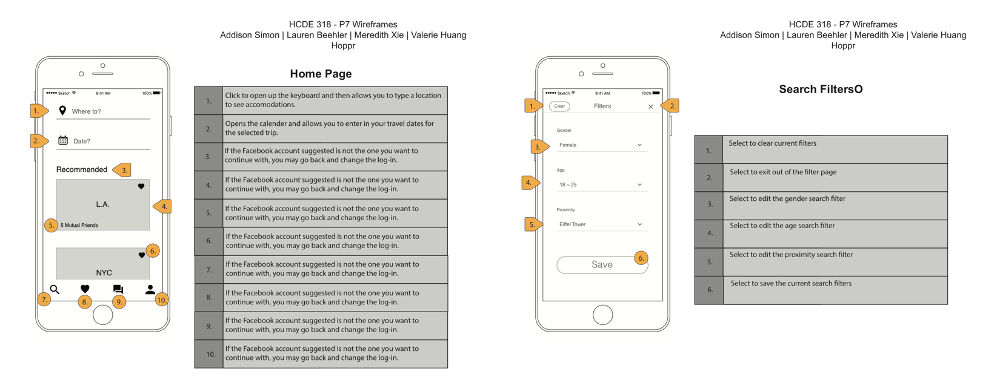 Figure 11, Annotated wireframes of home page and filter pageFull Annotated Wireframe
High fidelity prototype
From the wireframes, creating the high-fidelity mock-up wasn’t simply a matter of adding images and color; the structure of several of the screens was adjusted to account for critiques from our peers and another pass over with the personas.
On the home page, I adjusted the navigation bar again, simplifying it to our main 3 features of searching, messaging, and controlling the personal profile. Additionally, I adjusted the level of hierarchy for the ‘saved’ feature to ensure that the primary goal of finding a place for the user to stay is met.
When viewing an accommodation, I adjusted the mutual friends list to make it more apparent, standardized the levels of hierarchy and worked to make the overview of the reviews more intuitive.
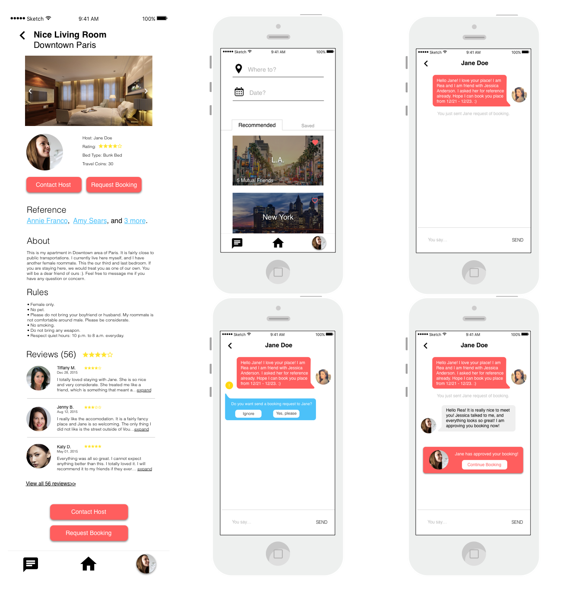 Figure 12, High fidelity prototypeIn the messaging portion, I added capability through enabling the user to request booking while in the chat based on comments from in-class peer review. I did this by placing a notification next to a chat that contains phrases and words that suggest booking, staying, or other similar concepts. The host would be able to confirm a booking from inside the app, and a message marker would appear in the chat whenever edits to the booking are made.
Future steps
As reaching the end of the quarter, I still have elements of our project that I don’t have answers to. I had originally conceived of Hoppr utilizing a virtual currency to incentivize hosting, because the virtual currency system balance the number of users for being host and residents. However, as the project moving forward, I found that this would limit users who don’t have that option to host (such as people who live in Frat or Sorority house). Additionally, risk management is an important element, but because we don’t use real money on Hoppr, the most we currently would be able to provide is advice and resources to deal with situations. Solving these issues would require more research and testing.
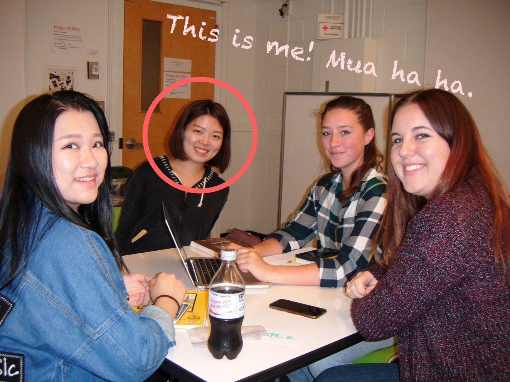 Happy family of team Hopper!
At last, here is a picture of me and my awesome teammates! Everybody is so nice and diligent. It was so much fun working together. We are the team that can work together smoothly and hangout together after work. I can’t remember how many times the four of us work together until so late at night, and yet we all care about and love our work product so much. Our instructor commented on our final presentation that he is really glad to see our product grown within ten weeks, as are we.